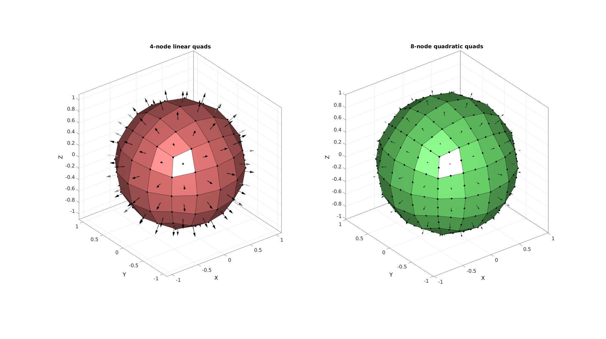
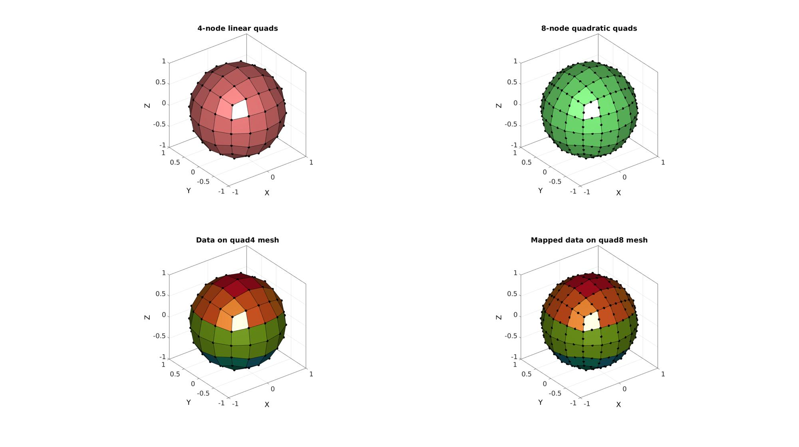

quad4_quad8
Below is a demonstration of the features of the quad4_quad8 function
Contents
Syntax
[QUAD8,V8,VX8C]=quad4_quad8(QUAD4,V4,VXC);
Description
The quad4_quad8 converts 4-node quads to 8-node quads. These correspond to linear and quadratic quadrilateral elements for finite element analysis. The 8-node triangular element follows the FEBio format such that the first 4 points are the 4-node quad points, the following 4 nodes are the mid-edge points. To plot it with a command such as patch or gpatch one therefore needs to use element2patch or use: QUAD8(:,[1 5 2 6 3 7 4 8]);
Examples
clear; close all; clc; % Plot settings fontSize=25; faceColor='b'; faceAlpha=0.3; edgeColor='k'; edgeWidth1=2; edgeWidth2=1; markerSize1=75; markerSize2=10;
CONVERSION FROM QUAD4 TO QUAD8
Creating an example triangulated mesh
[QUAD4,V4]=quadSphere(2,1);
Converting to a single 10-node tetrahedron
[QUAD8,V8,~]=quad4_quad8(QUAD4,V4);
[F8]=element2patch(QUAD8,[],'quad8');
Plotting elements
cFigure; % Open figure for plotting subplot(1,2,1); hold on; title('4-node linear quads','FontSize',fontSize); gpatch(QUAD4,V4,'rw'); %Plotting surface patchNormPlot(QUAD4,V4); %Plotting face normals plotV(V4,'k.','MarkerSize',25); axisGeom; camlight('headlight'); subplot(1,2,2); hold on; title('8-node quadratic quads','FontSize',fontSize); % gpatch(TRI6(:,[1 4 2 5 3 6]),V6,'gw'); %Plotting surface gpatch(F8,V8,'gw'); %Plotting surface patchNormPlot(F8,V8); %Plotting face normals plotV(V8,'k.','MarkerSize',25); axisGeom; camlight('headlight'); drawnow;
CONVERSION FROM QUAD4 TO QUAD8, EXAMPLE FOR A CONVERSION OF NODAL PARAMETERS
nodalData_quad4=V4(:,3)*2;
Converting to a single 10-node tetrahedron
dataCell_quad4={nodalData_quad4};
[QUAD8,V8,dataCell_quad8]=quad4_quad8(QUAD4,V4,dataCell_quad4);
[F8]=element2patch(QUAD8,[],'quad8');
nodalData_quad8=dataCell_quad8{1};
Plotting elements
hf=cFigure; % Open figure for plotting subplot(2,2,1); hold on; title('4-node linear quads','FontSize',fontSize); gpatch(QUAD4,V4,'rw'); %Plotting surface plotV(V4,'k.','MarkerSize',25); axisGeom; camlight('headlight'); subplot(2,2,3); hold on; title('Data on quad4 mesh','FontSize',fontSize); gpatch(QUAD4,V4,nodalData_quad4); %Plotting surface plotV(V4,'k.','MarkerSize',25); axisGeom; camlight('headlight'); subplot(2,2,2); hold on; title('8-node quadratic quads','FontSize',fontSize); gpatch(F8,V8,'gw'); %Plotting surface plotV(V8,'k.','MarkerSize',25); axisGeom; camlight('headlight'); colormap(gjet(250)); subplot(2,2,4); hold on; title('Mapped data on quad8 mesh','FontSize',fontSize); gpatch(F8,V8,nodalData_quad8); %Plotting surface plotV(V8,'k.','MarkerSize',25); axisGeom; camlight('headlight'); colormap(gjet(250)); drawnow;

GIBBON www.gibboncode.org
Kevin Mattheus Moerman, gibbon.toolbox@gmail.com
GIBBON footer text
License: https://github.com/gibbonCode/GIBBON/blob/master/LICENSE
GIBBON: The Geometry and Image-based Bioengineering add-On. A toolbox for image segmentation, image-based modeling, meshing, and finite element analysis.
Copyright (C) 2019 Kevin Mattheus Moerman
This program is free software: you can redistribute it and/or modify it under the terms of the GNU General Public License as published by the Free Software Foundation, either version 3 of the License, or (at your option) any later version.
This program is distributed in the hope that it will be useful, but WITHOUT ANY WARRANTY; without even the implied warranty of MERCHANTABILITY or FITNESS FOR A PARTICULAR PURPOSE. See the GNU General Public License for more details.
You should have received a copy of the GNU General Public License along with this program. If not, see http://www.gnu.org/licenses/.